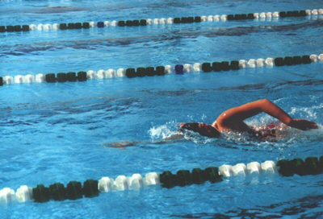

Swimming
Swimming is another popular way to start getting fit because most towns have a pool, it's still relatively inexpensive and you need even less kit than you do for running.
Most pools also offer lessons if you're a non-swimmer, or you haven't swum for years and want to improve your technique.
Swimming is a great way to tone up and trim down, because to swim you need to move your body against the resistance of the water. Just swimming a few lengths involves most of the major muscle groups, giving your body a good workout. And if you crank up the pace, you'll get a brilliant aerobic workout, too.
Swimming is also an effective form of fat-burning exercise: because you can swim at your own pace, slowly if you wish, you can keep swimming for long periods, and maintaining your staying power is a vital goal in fat-burning exercise.
The other big advantage is that water supports your weight and takes the stress off your joints, so you can put your body through a good workout without your knees, hips or spine paying the price.
Research shows that exercising in waist-deep water reduces the pressure on joints by 50 per cent, while exercising in chest-deep water reduces it by as much as 75 per cent. This can also make it a great exercise if you're recovering from an injury that means you can't run or play your normal sport.
However, while this is great if you have joint problems such as arthritis, it won't build up much protection against the brittle bone disease osteoporosis because it's not a weight-bearing exercise, so you make want to alternate swimming with other activities.

© Daniel Ingram, 2011 ~ Site Map
All content within is provided for general information only, and should not be treated as a substitute for the medical advice of your own doctor or any other health care professional. We are not responsible or liable for any diagnosis made by a user based on the content of this website. We are not liable for the contents of any external internet sites listed, nor does it endorse any commercial product or service mentioned or advised on any of the sites. See our Links Policy for more information. Always consult your own GP if you're in any way concerned about your health.